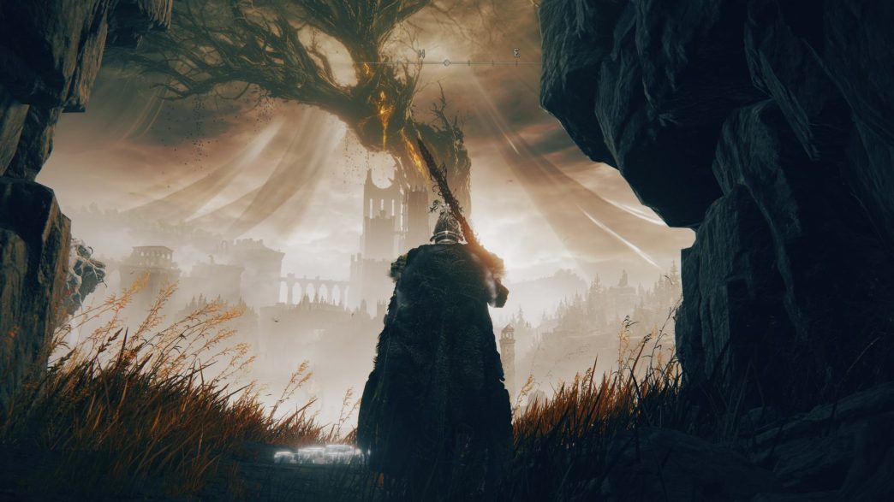

EldenRing Shadow of Erdtree é um DLC perfeito
não é por qualquer motivo que Elden Ring assegurou o GOTY em 2022. Apesar de nem o Miyazaki considerar o jogo sua melhor obra, é inegável que a fórmula de mundo aberto inédita e a genialidade de game design da FromSoftware culminaram em um dos jogos mais divertidos da última década.
É por isso que quando a desenvolvedora anunciou o primeiro (e único) DLC do título, Shadow of the Erdtree, tanta gente ficou com os cabelos em pé de ansiedade. Não importava o que viesse por aí, o hype já estava nas alturas – e, historicamente, DLCs da FromSoftware têm fama de elevar a experiência original.
Não é todo dia que encontramos conteúdos adicionais que adicionam dezenas de horas de campanha, mapas enormes e bem-aproveitados, e chefões incrivelmente marcantes. Sem dúvidas, Elden Ring Shadow of the Erdtree traz o melhor da FromSoftware e não deve ser perdido por ninguém. Confira o review completo!
Shadow of the Erdtree é Elden Ring puro
Não é de hoje que DLCs de Dark Souls e até Bloodborne mostraram que, quase sempre, a FromSoftware acerta demais em trazer expansões para seus jogos: Artorias of the Abyss, The Ringed City, The Old Hunters e por aí vai, todos com dificuldade elevada e áreas memoráveis.
Com Elden Ring, não foi diferente. É quase inacreditável a quantidade de conteúdo que Shadow of the Erdtree traz à mesa. O mapa é gigantesco, recheado de cenários diferentes, locais para explorar que trazem o mesmo sentido gostoso de descoberta e aventura do jogo base, personagens, quests, itens e tudo que você pode imaginar.